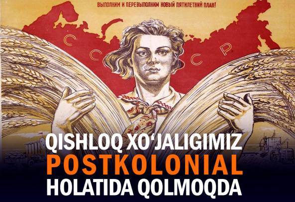

Муҳаррир танлови
Барчаси

Конституция қишлоқ хўжалиги ерларини хусусийлаштиришга тўсиқ бўлмаслиги керак
Қизларнинг мактабга миллий рўмолда келиши ман этилмайди — Халқ таълими вазири
Воситачиларсиз ҳамкорлик – Марказий Осиё давлатлари тўлиқ интеграцияга кириша оладими?